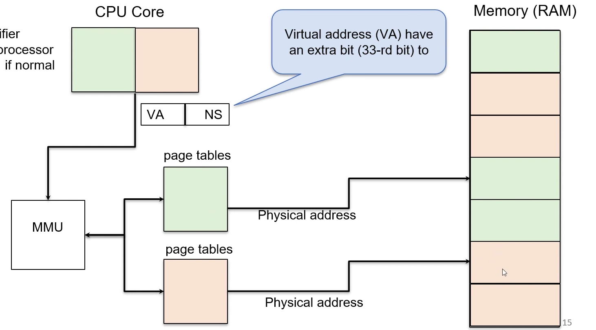
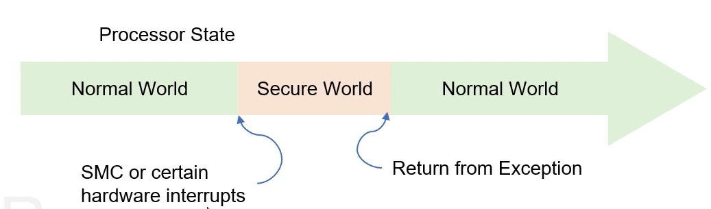
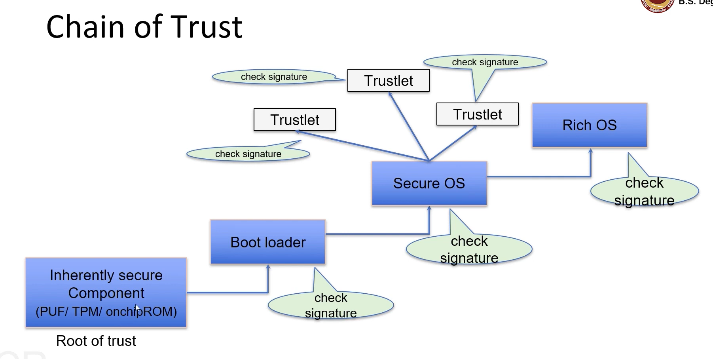

Since the function parameters are integer, each occupies 4 bytes. Hence addresses [1000,997] store the integer 3 and so on.
Similarly the return address being 32 bits requires 4 bytes of storage.
Now take a look at the buffers. If you do printf(”%d, buffer1), you get 976 ie the started address of buffer 1. Similarly if you do printf(”%d, buffer2), you’ll get 966.
Now note that buffer2 is 10 bytes long and hence buffer2 array indices go from 0-9. What happens if we do printf(”%x”, &buffer2[10]) ie print the address of buffer[10]. We get 976.
Note how we have now accessed buffer1 using buffer2? ⇒ This essentially is the buffer overflow problem because programming languages like C don’t restrict which memory locations buffer2 can access.
Take this a step further, what if you overflow enough that now you’ve accessed the memory location of the return address ie buffer2[19] will now access the memory location of the return address. If you change the return address here to a malicious code, you can now return to memory location of your choice ⇒ BIG Problem
Often it is hard to return to a memory location outside the stack (lots of complexities). Instead if somehow malicious code can be placed in the buffer itself, and you overflow the buffer such that every memory location in the stack contains the value of the buffer2 (BA), one of them is bound to be the return address which now contains the address of buffer2.
So if you can place the malicious code at location 966 and use the overflow so that every address points to 966, the return address will be 966 and hence the malicious code will get executed.
Defenses
Eliminate program flaws that could lead to subverting the execution by using safer programming languages, libraries, hardware enhancements and static analysis.
If we cant eliminate, make it more difficult to subvert execution:
W^X: Any memory location can be writable or executable but not both. So in this case the buffer location would be writeable but not executable so placing the malicious code there would not affect the system.
ASLR where the various components in the address space are randomized
Canaries act as a way to detect overflow beyond a frame
If malware still manages to execute, try to detect at runtime using ML, AI techniques and malware signatures.
If can’t detect at runtime, try to restrict what the malware can do by using sandboxing and tracking information flow.
§12.2: Micro-Architectural Attacks
Previously we have seen how the ring architecture and virtual address space ensures different levels of privilege and sandboxing. However, Microarchitectural Attacks directly affect the processor and can leak information from OS across privileged rings and can leak information from one process to another across virtual spaces.
These attacks work essentially because of shared hardware like the cache.
The entire Process State can be divided into two parts:
Architectural State is visible to software like the registers, Program Counter, Stack Pointer, CSR, r0-r31
Microarchitectural State are those regions of the processor that can store data but are inaccessible/invisible to the software like the cache memory, TLB, Branch Predictors, etc.
So when a context switch occurs between P1 and P2, the state of the process i.e the architectural state is saved by the process before it switches to the next process. However the microarchitectural state is not affected when switching from P1 to P2 ⇒ Even if P2 is executing, michroarchitectural state may still hold data from P1. If P2 is somehow able to read out of this state, P2 may be able to get information about P1 and bypass the sandbox environment.
Typically a processor is several times faster than a DRAM. Whilst DRAM is good to store data in a highly dense manner, it is not as performant.
To bridge this gap between processors and RAM, cache memory stores recently loaded data from the RAM. For example when the processor requests some data from DRAM, it is loaded onto both the processor and the cache.
If there is a subsequent request of the same data, the data can be directly loaded into the processor from the cache memory which is considerably faster.
There is a mapping that exists between the addresses in RAM and the set. So a particular address is always stored in the same set.
Prime + Probe Attack
During the prime phase, the spy process populates all the sets and ways with its own random data. Since this data was previously not on the cache, the access time for this would be high.
Now the victim process is run and since cache is full, certain entries which were previously populated by the spy process get removed and replaced by the victim data
In the probe phase, the spy process is run again and since a lot of the data is already present on the cache its retrieval is quick. However since some data got replaced, its access time would be high. This way we can identify which entries were populated by the victim.
Given the set number, and input to the function one can identify the memory address of certain data that was loaded by the victim.
Now that we have the address, we can run the victim process again and then the spy process can request the exact address that was determined in the previous step. This way the spy process bypasses the VA of its own process is able to access victim processes data through the cache.
§12.3: Counter Measures
The three steps in the previous attack was:
Sharing processor resource: In the microarchitectural state, all process shared all of the cache.
Counter Measure: Each process has its own set. This way two processes would not be able to read from each others cache or evict data of another process ⇒ Not using the resources efficiently.
Measuring Execution time accurately: the attack works by profiling access times accurately.
Counter Measure: Disable accurate time measurements like making the timestamp counter is made less precise by adding random delays.
Inference: The attacker is able to infer the cache set
Counter Measure: Break relationship between address and cache access by encrypting address. The attacker will be able to infer that a cache set was accessed but will not be able determine the exact set.
§12.4: Trusted Execution Environment
When there are bugs in the OS as opposed to a malicious software (process), the attack surface is much larger. What we need to do is reduce the attack surface such that even if there is a bug in the OS, the secret is kept safe.
In a Trusted Execution Environment, we are able to keep certain parts of memory protected such that they are inaccessible even by the OS. This greatly reduced the attack surface and secrets are protected even if the OS & Hypervisor are compromised.
When secrets need to be accessed, processor transitions to Secure Execution Mode. After secure code completes, move processor back to normal mode.
For example if a certain app requires the phone unlock PIN, it will transition to secure mode. Upon successfully entering the PIN, the secure mode would return to normal mode and indicate that PIN was entered successfully. Incase the wrong PIN is entered, the it returns to normal mode and indicates wrong PIN was entered.
Essentially all the app knows is if the right PIN was entered or not. It never has access to the PIN.
All the user applications run in the normal world whereas secure apps would be in the secure world. Monitor mode connects the two worlds.
First protected regions are created in memory that are not accessible even by the OS
Virtual addresses have an extra bit. Previously if a VA was 32 bit, now the VA would be 33 bits. When the processor is in the secure world this bit is 0, and when it is in normal mode this bit is set to 1. So based on this bit, the MMU will translate the address corresponding to the correct page table. 
This can extend to every peripheral not just RAM. Note how every devices is memory mapped? This way we can set certain devices (or certain sub devices) to be accessible only from the secure mode.
When secrets need to be accessed, processor moves to Secure Execution Mode. After secure code completes, processor moves back to normal mode. 
Hardware interrupts or SMC instruction cause the switch from the normal world to secure world. During this process Monitor saves the context of the normal world process. Then in the secure world, the exception is handled and upon returning to normal world the monitor restores the context.
All interrupts are routed to the monitor first. Then the monitor routes the interrupts to the correct world. Therefore there are multiple interrupt vector tables (1 for monitor mode, 1 for secure world, 1 for normal mode)
The minimal secure world can just have implementation of critical applications. But it could also be a full fledged OS like Samsung Knox. The secure OS could be tightly coupled with the rich OS so that priority of task in the rich OS gets mapped accordingly in the secure OS.
Complete MMU Support.
§12.5: Securing data in storage
Attackers may replace the flash software with a malicious version, compromising the entire system ⇒ Secure Boot
There is a secure chain of trust starting from the root device that cannot be easily tampered. 
{kind=link}
{kind=link}
{kind=link}
{kind=link}
{kind=link}
{kind=link}
{kind=link}
{kind=link}
{kind=link}
{kind=link}